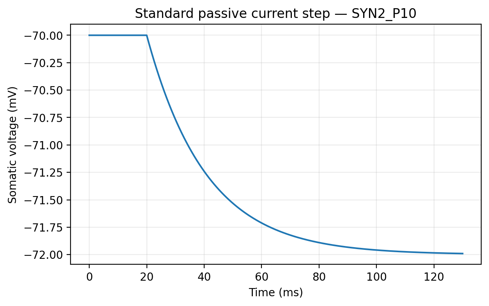
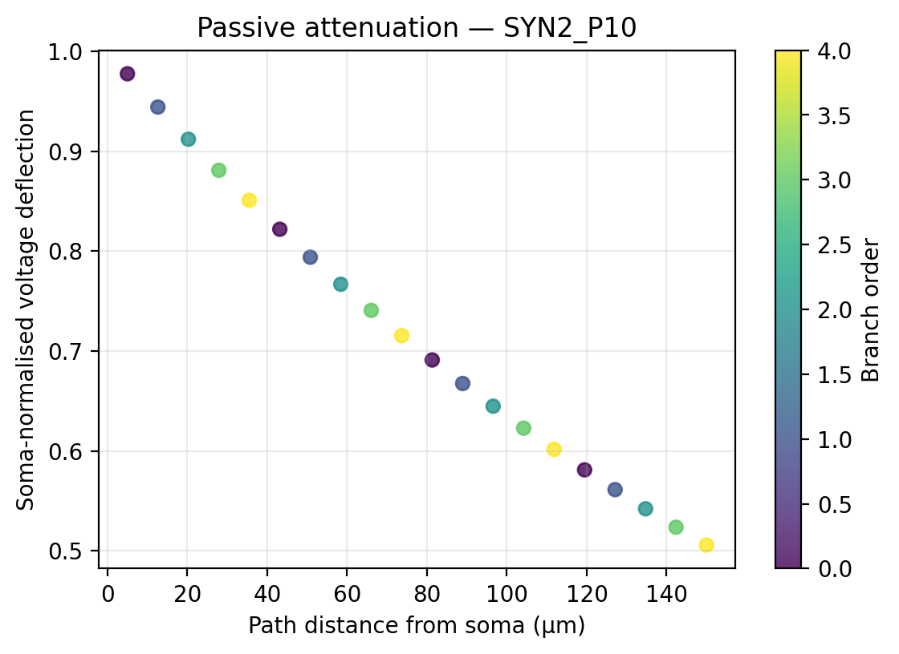

QC status: accepted
Errors: none
Warnings: none
| cell_id | SYN2_P10 |
|---|---|
| age_group | P10 |
| n_segments | 21 |
| total_cable_length_um | 1020 |
| maximum_branch_order | 5 |
| n_terminals | 7 |
| input_resistance_MOhm | 683.2744798278239 |
| tau_ms | 20.659147749832254 |
| tau_fit_r2 | 0.99 |
| maximum_path_distance_um | 130 |
| mean_soma_normalised_attenuation | 0.72 |
| minimum_soma_normalised_attenuation | 0.45 |
| resting_stable | True |
| matrix_mode | representative |
| n_transfer_rows | 81 |

